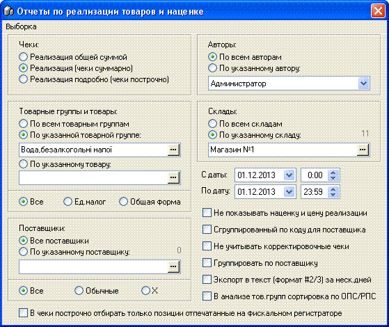
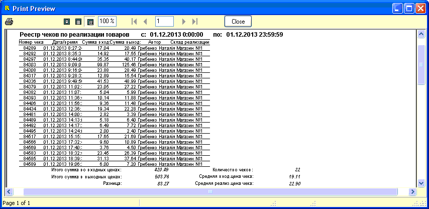
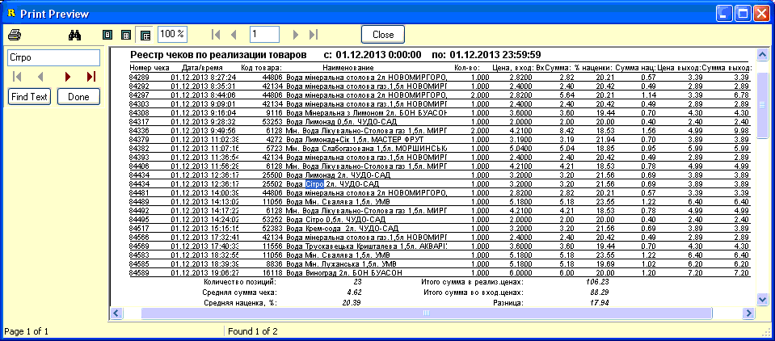

Одними из наиболее востребованных отчетных данных
в магазине являются данные о продажах товаров. Отчет "Реализация товаров и
наценка" позволяет вывести результаты продаж на печать в разнообразном виде,
исходя из значений параметров подобраных пользователем на форме отчета или при
помощи готовых отчетов. На рисунке ниже показан внешний вид формы, рассмотрим
опции выбора параметров подробнее.

Панели "Товарные группы и товары", "Поставщики",
"Авторы", "Склады", а также календарики "С даты/По дату" - используются
для указания необходимых критериев отбора.
Панель "Чеки" используется для
указания в каком виде должен быть сформирован отчет. Для вывода отчета по
указанным критериям используется первый пункт главного меню "Сформировать
отчет по форме". В правом нижнем углу формы находятся дополнительные опции
отбора, когда какая-то из них будет задействоваться, то будем отдельно
указывать это в описании данного отчета. Опция "Не учитывать корректировочные
чеки" работает для всех трех видов отчетов - флажек включает/выключает отбор
сумм корректировочных чеков с обычными чеками. (Подробнее о таких чека
см.раздел справки "Отчеты/Поиск ошибок").
1. Реализация общей суммой.
Просто отобразит диалоговое окно с суммарным итогом продаж в розничных и
закупочных ценах, а также маржу-разницу между ними. Используется
редко.
2. Реализация (чеки суммарно).
Выводит, согласно параметров выбранных на форме, отчет в 2 столбца с
перечнем заголовков чеков с суммами и общими итогами по отчету. Пример показан
на рисунке ниже:

3. Реализация подробно (чеки
построчно). Выводит развернутый отчет по проданным товарам, по
табличной части чеков. Для данного типа выборки имеют значение следующие опции
(кроме общих для всех трех типов):
"В чеки построчно отбирать только позиции
отпечатанные на фискальном регистраторе" - если точнее, то берутся строки
чеков, заголовки которых сохранены со статусум печати "Да". Однако, это может
не совсем точно отображать информацию, т.к. внутри таких чеков могли
быть товары помеченные "не печатать" и "нефискальный". Для более точных
данных связи с фискальным регистратором, воспользуйтесь соответствующей
группой готовых отчетов главного меню данной формы (см.подраздел справки
ниже).
"Сгруппированный по коду для поставщика" -
выводит свой тип отчета, в 2 столбца, количество суммарное по коду товара,
выводится закуп.цена товара/сумма. Опция работает, если выбран конкретный
поставщик.
"Не показывать наценку и цену реализации" -
убирает видимость соответствующих стролбцов в печатной форме отчета.
Пример отчета на рисунке внизу, в предварительном
просмотре печати также доступен поиск по части текста по отчету (панель
слева):

Главное меню формы отчета содержит кроме пункта
"Сформировать отчет по форме", которым мы формировали вышеописанные отчеты,
и большое количество готовых отчетов, которые будут подробнее рассмотрены
в подразделах данного раздела справки.